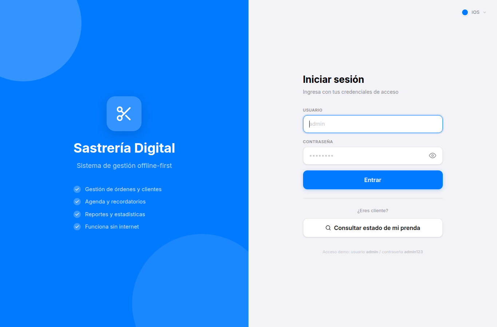
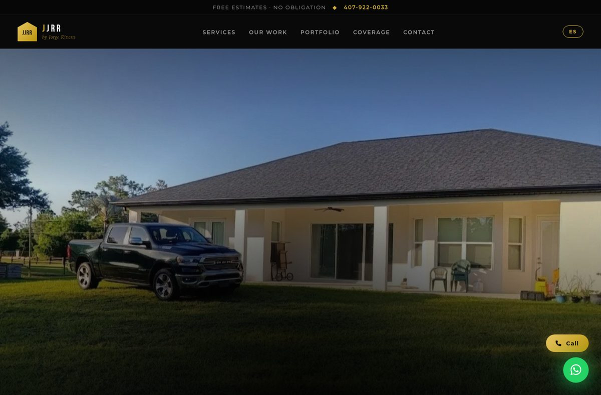

Mi Portafolio
Una selección de proyectos que combinan rigor matemático con implementación elegante en código.
Proyectos Destacados
Sistemas full-stack, microservicios, investigación en IA y videojuegos.

Proyecto Terminal — Detección de Paráfrasis
Sistema inteligente de detección de paráfrasis en el repositorio CBI (~5,000 tesis). Combina BM25, FAISS (2.3M vectores), fine-tuning de LLMs (BETO, XLM-R) y un ensamble con AUROC = 0.999. Proyecto Terminal de Investigación I.

Farmacia Online — 8 Microservicios
Plataforma de farmacia online con arquitectura de microservicios (Spring Boot): catálogo, usuarios, inventario, pedidos, notificaciones y pasarela API. Comunicación asíncrona con RabbitMQ, frontend en React + TypeScript, orquestación con Docker Compose. Cada servicio tiene su propio modelo de datos, pruebas y Dockerfile.

Veterinary Clinic Management
Sistema de gestión para clínicas veterinarias con Spring Boot + PostgreSQL. Incluye expedientes de mascotas, vacunación, hospitalización, planes de tratamiento, booking online y notificaciones por email. Portal con roles ADMIN/VETERINARIO/CLIENTE y autenticación JWT. Desplegable con Docker.

Marianito — 2D Platformer (Java Swing)
Juego de plataformas 2D estilo Super Mario Bros con 4 mundos, enemigos, power-ups, jefe final y build Gradle. Migrado de java.applet (obsoleto) a javax.sound.sampled. Incluye caché de imágenes para rendimiento, documentación LaTeX detallada y arquitectura MVC.

Sastrería Digital — PWA con IndexedDB
Aplicación web progresiva (PWA) para gestión de sastrería: dashboard, pedidos, clientes, agenda, reportes con gráficas (Recharts) y escáner QR. Almacenamiento offline con Dexie/IndexedDB, exportación a PDF con jsPDF. Instalable como app nativa.

Task API — FastAPI + SQLAlchemy Async
API REST para gestión de tareas con FastAPI asíncrono, SQLAlchemy 2.0 async, Alembic migrations, autenticación JWT con RBAC (admin/user), filtros avanzados y 22 pruebas automatizadas con pytest. Documentación Swagger/ReDoc automática.

Algoritmos de IA en Java
Colección de 15 proyectos de inteligencia artificial con interfaz gráfica: BFS, DFS, A*, Minimax, Negamax, backtracking, algoritmo de Wang y más.

Sistema de Gestión Dental
Sistema web completo para consultorio dental con agenda interactiva, odontograma de 32 dientes, facturación con PDF y portal del paciente.

KirbyWorld — Low-Poly 3D
Videojuego 3D estilo low-poly con terreno procedural, ciclo día/noche, cámara orbital, inventario y sistema de poderes.

Pseudocode Compiler (Flex & Bison)
Compilador de pseudocódigo en español a C. Cubre análisis léxico (Flex), sintáctico (Bison LALR(1)), semántico (tabla de símbolos) y generación de código.

Programación Concurrente
Proyectos de concurrencia en C: algoritmos genéticos (armaduras planas, coloración de grafos), ordenamiento secuencial vs. paralelo con forks, árbol binario de procesos y más.

Sistemas Operativos
Portafolio de prácticas de SO en C: análisis MBR/GPT/APFS/NTFS, multiprogramación con forks, hilos, memoria compartida POSIX, ncurses y servicios del sistema.

E-commerce Microservicios (UAMIShop)
Sistema de e-commerce con microservicios Spring Boot, RabbitMQ, API Gateway, frontend vanilla y orquestación con Docker Compose.

JJRR Roofing — Sitio Profesional
Landing page profesional para empresa de techados en Florida Central. Diseño responsivo, galería de trabajos, videos, tarjeta de contacto digital y QR.


MCC — Marketplace
Proyecto final de Temas Selectos de Ingeniería de Software: aplicación de tienda en línea con catálogo de productos, carrito de compras y gestión de órdenes.
Proyectos Académicos
Ejercicios de algoritmia e inteligencia artificial (Java · Swing): búsqueda (BFS, DFS, A*), juegos adversariales (Minimax, Negamax) y optimización.

Conecta 4 con Negamax
Juego de Conecta 4 con IA basada en el algoritmo Negamax con interfaz gráfica en Java Swing.

Algoritmo de Wang
Implementación del algoritmo de Wang para demostración automática de teoremas en lógica proposicional con interfaz gráfica.

Buscaminas con Backtracking
Buscaminas con algoritmo de flood-fill iterativo, múltiples dificultades y detección automática de victoria/derrota.

Gato (Tic-Tac-Toe) con Minimax
Juego de Gato con IA basada en Minimax con poda alfa-beta. Interfaz Swing con tablero interactivo, indicador de turno y detección de victoria/empate.

Gato (Tic-Tac-Toe) con Negamax
Variante del Gato usando Negamax, simplificación del Minimax que unifica la evaluación en una sola función. Interfaz Swing con puntuación dinámica.

Sopa de Letras
Juego de Sopa de Letras con generación automática de cuadrículas, búsqueda de palabras en 8 direcciones, selección interactiva y verificación en tiempo real.

Misioneros y Caníbales — BFS, DFS, DFS Recursivo
Solución al problema clásico de Misioneros y Caníbales implementada con tres algoritmos de búsqueda: BFS, DFS iterativo y DFS recursivo. Interfaz gráfica para visualizar cada paso de la solución.

4-Puzzle con BFS y DFS
Rompecabezas 2×2 resuelto con BFS y DFS. Interfaz Swing que anima cada movimiento desde el estado inicial hasta la meta, con conteo de pasos y nodos explorados.

8-Puzzle con A*
Rompecabezas 3×3 resuelto con A* usando heurística Manhattan. Visualización paso a paso con estadísticas de nodos expandidos y profundidad de solución.

Puzzle con DFS
Rompecabezas resuelto con DFS (Depth-First Search). Interfaz que muestra la exploración del árbol de estados y la solución encontrada.

N-Reinas Visualizer
Visualizador del problema de las N-Reinas con backtracking. Interfaz gráfica que coloca reinas en un tablero N×N sin que se amenacen entre sí, con control de velocidad de animación.

Problema de Rutas v1
Primera versión del problema de búsqueda de rutas óptimas entre ciudades. Implementa BFS y DFS para encontrar caminos en un grafo ponderado con interfaz gráfica.

Problema de Rutas v2 — A*
Segunda versión con A* para rutas óptimas. Interfaz mejorada que muestra el costo acumulado, heurística y camino encontrado en un mapa de ciudades.

Algoritmo de Wang v1
Primera implementación del algoritmo de Wang para demostración automática de teoremas en lógica proposicional mediante cálculo de secuentes.
Programación Lineal
Solucionador de problemas de programación lineal con interfaz gráfica. Permite ingresar restricciones y función objetivo, y encuentra la solución óptima gráficamente.